Lavado y prelavado
Espuma densa y shampoos concentrados que sueltan la suciedad antes de tocar la pintura.
- Storm Pink, Bubble Blue y Storm Red
- Cañón de espuma con accesorios
PROLUXCAR
0Detallado automotriz profesional
Shampoos, ceras, pulidores y limpiadores concentrados para detallado automotriz, más capacitación para dominarlos. Pide tu catálogo con precios de mayoreo.
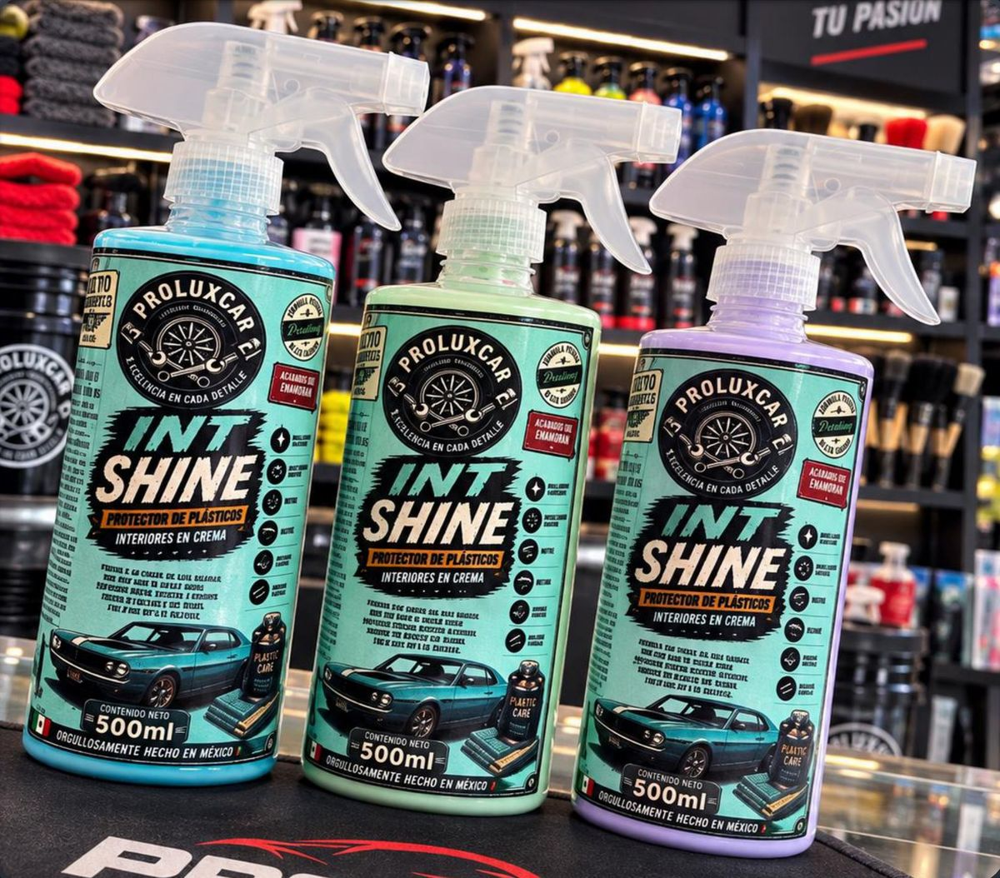
Lo que surtimos
Seis líneas pensadas para cada etapa del detallado, del prelavado al acabado espejo.
Espuma densa y shampoos concentrados que sueltan la suciedad antes de tocar la pintura.
Capa protectora contra rayos UV, rayones superficiales y lluvia ácida.
Limpieza segura para plásticos, piel, telas, pantallas y cristales, sin rayones.
Desengrasa motor y chasis, y disuelve óxido y polvo de balatas sin tallar.
Devuelve color y brillo a llantas y plásticos exteriores castigados por el sol.
Brochas, microfibras y guantes de calidad para trabajar sin rayar.
Catálogo de mayoreo
Cada producto con su presentación, pH y modo de uso. Elige lo que necesitas y cotiza directo por WhatsApp.
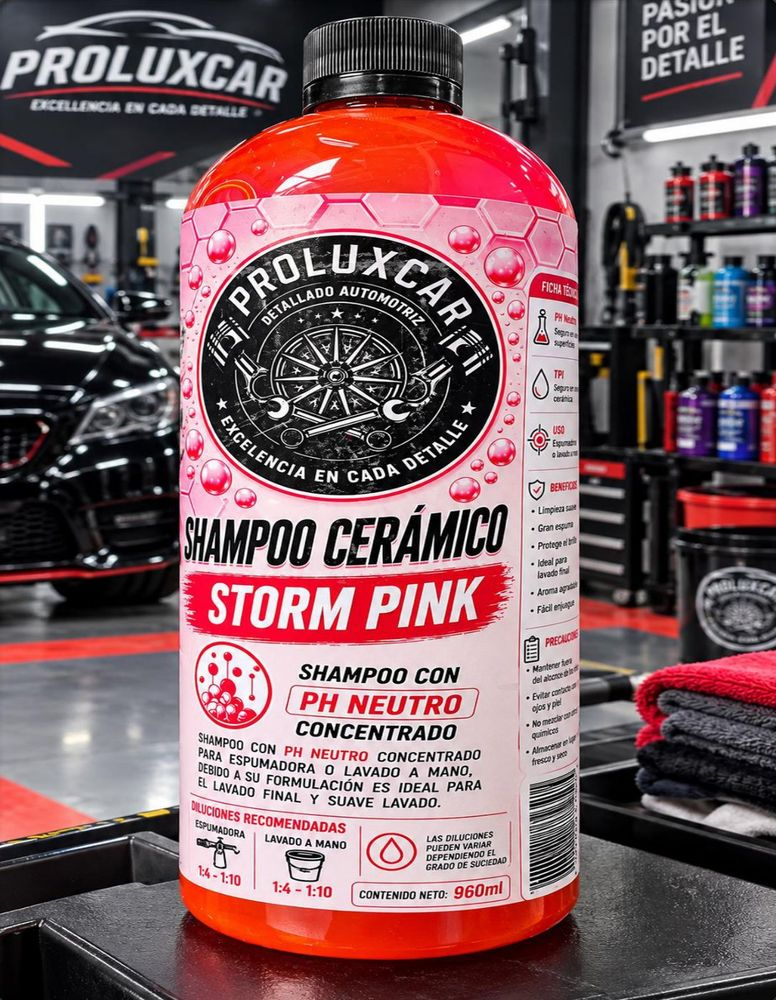
LavadoCuida la pintura y crea una protección hidrofóbica. Dilución 1:4 en espumador.
Mayoreo$85
Lo quiero Lavado
LavadoConcentrado ideal para el prelavado: desprende la suciedad antes del lavado de contacto.
Mayoreo$68
Lo quiero Lavado
LavadoPrelavado con espumador para eliminar suciedad pesada antes del lavado de contacto.
Mayoreo$88
Lo quiero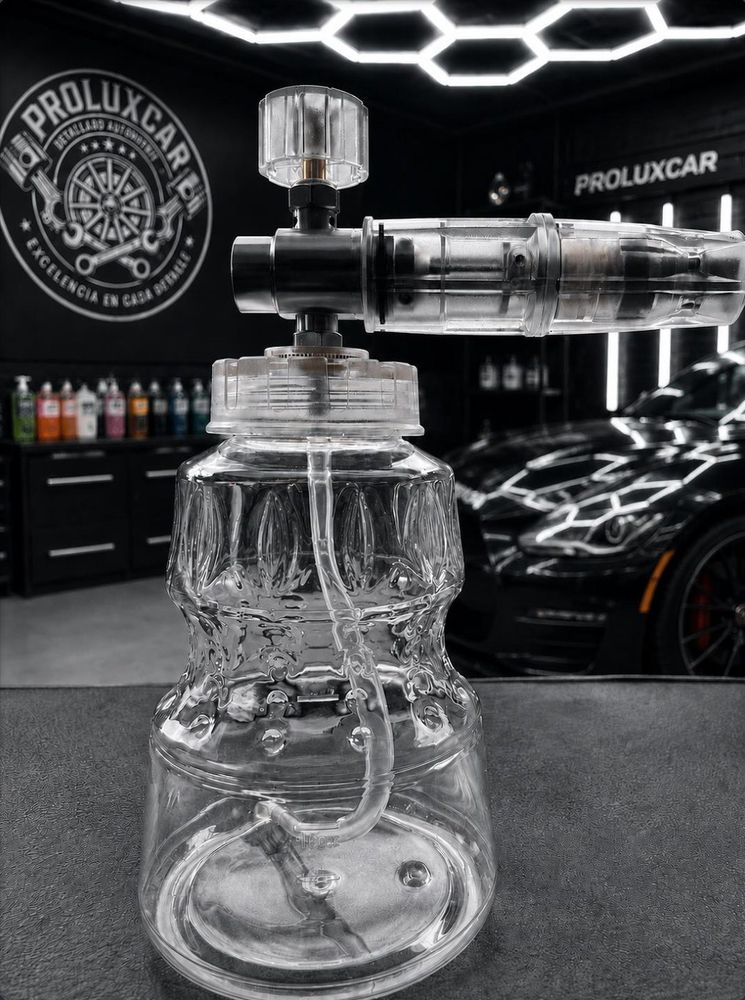
LavadoCapacidad de 1 litro con accesorios. Baña el auto con espuma densa en el prelavado.
Mayoreo$500desde 6 pzas · unidad $650
Lo quiero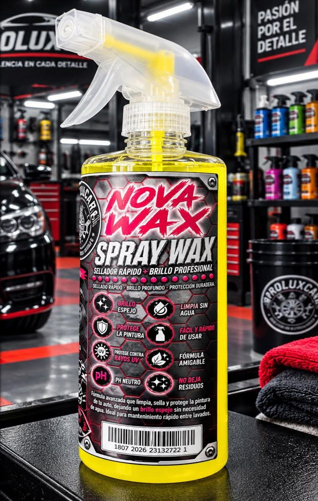
Protección y brilloLavado final concentrado que protege la pintura de rayos UV y suciedad. Lista para usar.
Mayoreo$85
Lo quiero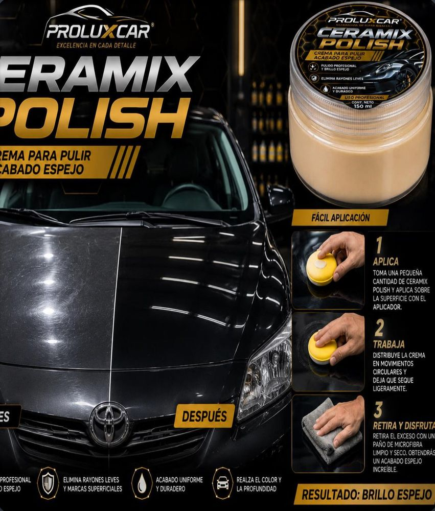
Protección y brilloCrema que quita rayones superficiales y deja un acabado espejo, como nuevo.
Mayoreo$88
Lo quiero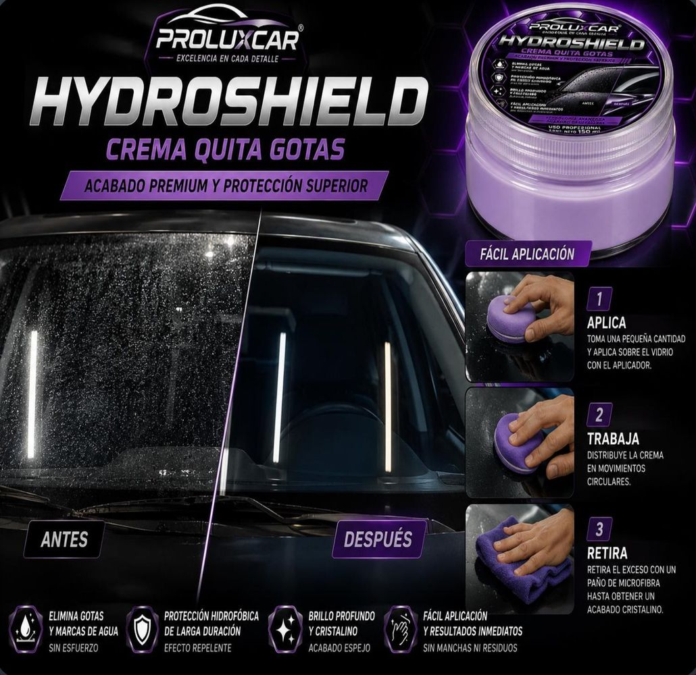
Protección y brilloElimina residuos y lluvia ácida de cristales, parabrisas y espejos.
Mayoreo$120
Lo quiero Interiores y cristales
Interiores y cristalesLimpia pantallas, tableros y cristales sin dejar rayones, incluso en acabado piano.
Mayoreo$95
Lo quiero Interiores y cristales
Interiores y cristalesLimpiador de interiores: plásticos, piel, telas y toldo. Espuma abundante con aroma a cítricos.
Mayoreo$85
Lo quiero Interiores y cristales
Interiores y cristalesAbrillanta y protege plásticos interiores con silicones. Rinde con poca cantidad.
Mayoreo$88
Lo quiero Interiores y cristales
Interiores y cristalesCrema a base de agua que restaura y abrillanta interiores con acabado brillante.
Mayoreo$88
Lo quiero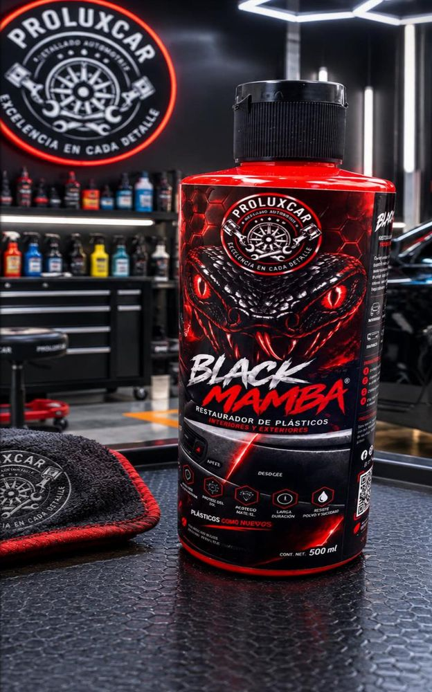
Llantas y plásticosGel a base de solvente que devuelve el color original a plásticos dañados por el sol.
Mayoreo$88
Lo quiero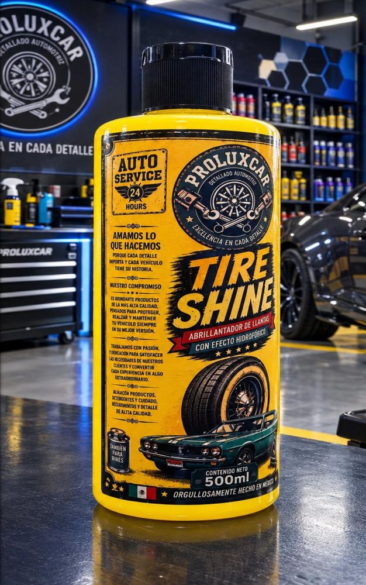
Llantas y plásticosGel hidrofóbico para llantas con efecto mojado y brillante que repele agua y polvo.
Mayoreo$88
Lo quiero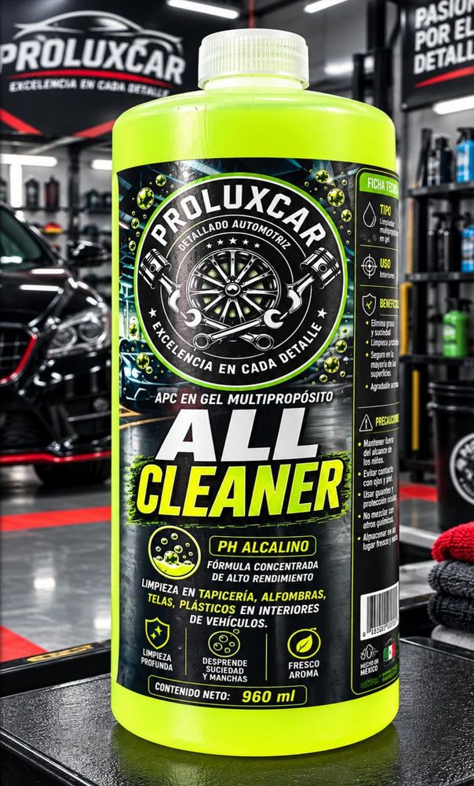
Limpieza pesadaMultipropósito concentrado para exterior e interior: plásticos, telas, metal y tapetes.
Mayoreo$88
Lo quiero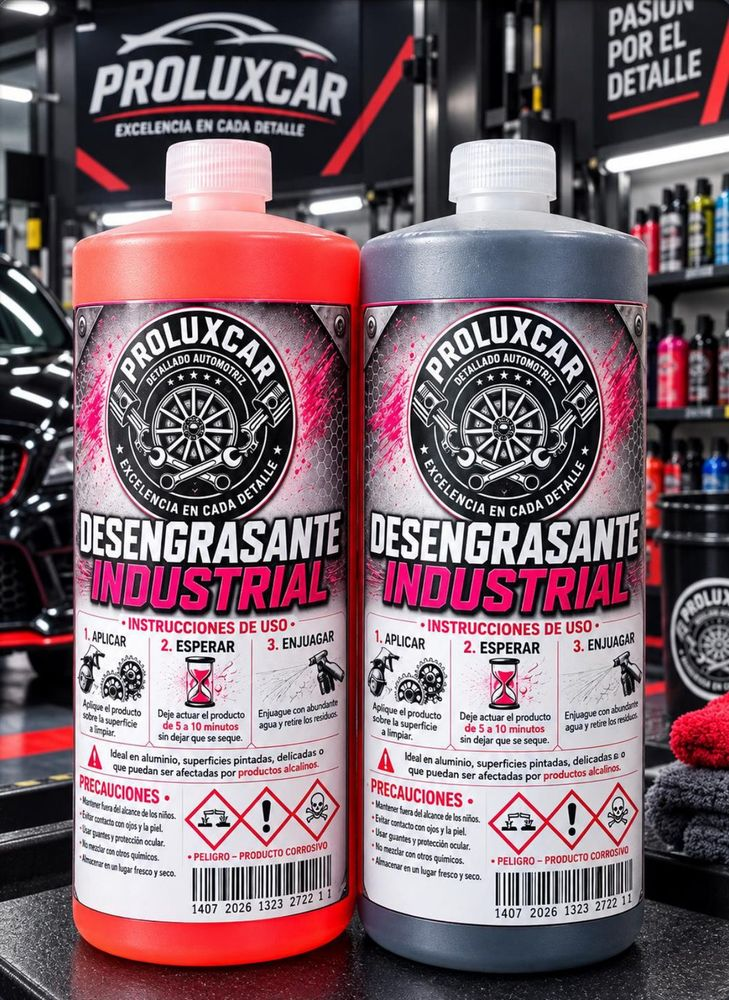
Limpieza pesadaSuciedad pesada en motor, guardapolvos, rines y chasis. Se activa con agua a presión, sin tallar.
Mayoreo$85
Lo quiero Limpieza pesada
Limpieza pesadaDisuelve óxido y polvo de balatas incrustado en rines y chasis.
Mayoreo$125
Lo quiero Herramientas
HerramientasPack de 5 tamaños para detallado interno; cerdas muy suaves.
Mayoreo$135
Lo quiero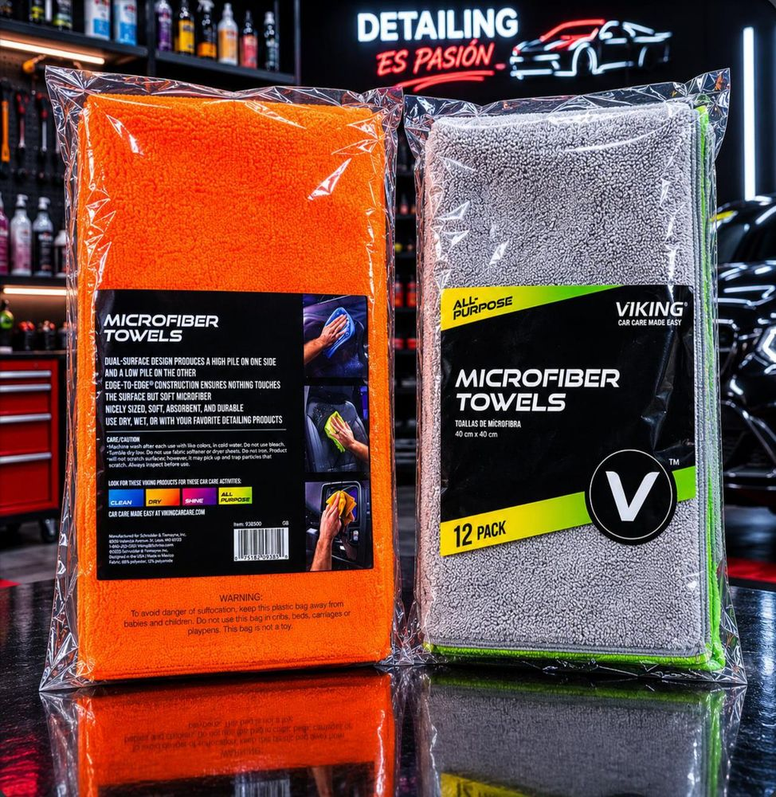
HerramientasPack de 12 piezas con gran absorción al secar y excelente agarre en cristales.
Mayoreo$192
Lo quiero Herramientas
HerramientasGuante grande para lavado de contacto, súper suave para evitar rayones.
Mayoreo$95desde 6 pzas
Lo quieroPrecios de mayoreo en MXN según el catálogo Proluxcar. Confirma disponibilidad y volumen por WhatsApp.
Por qué Proluxcar
Un auto bien detallado se nota en cada centímetro. Por eso reunimos shampoos, ceras, pulidores, limpiadores y herramientas pensados para detallistas, lavaderos y distribuidores.
Cada producto llega con su ficha: pH, dilución, modo de uso y presentación. Y si lo necesitas, te capacitamos para que tu equipo los use bien desde el primer día.
Capacitación
Además de vender producto, ofrecemos capacitación sobre nuestros productos: qué fórmula va en cada superficie, cómo diluirla y cuánto tiempo trabajarla.
Ácido
Óxido y polvo de balatas
Neutro
Lavado, protección e interiores
Alcalino
Suciedad pesada y grasa
Evita que shampoos, limpiadores y pulidos se sequen sobre la pintura y dejen marcas.
Storm Pink y Bubble Blue rinden 1:4 en espumador o 50 ml por cubeta. Más producto no es mejor lavado.
Es ácido: nunca sobre plásticos ni electrónicos, y en lapsos cortos para cuidar las superficies.
Descontamina y limpia primero; deja el gel reposar antes de mover el auto para que se adhiera.
Escríbenos y platicamos cómo la armamos para tu taller.
Cómo surtimos
Escríbenos por WhatsApp y recibe fichas, aplicaciones y precios de mayoreo.
Revisa presentaciones, pH y diluciones. Dinos qué necesitas y en qué cantidad.
Te confirmamos precio y disponibilidad por el mismo chat.
Resolvemos tus dudas y capacitamos a tu equipo para sacarles el máximo.
Dudas frecuentes
Sí. En el cañón de espuma ($500) y el guante de microfibra ($95) el precio de mayoreo aplica a partir de 6 piezas. Cuéntanos tu volumen y lo revisamos.
Sí, ofrecemos servicios de capacitación sobre nuestros productos: diluciones, tiempos de aplicación y qué fórmula usar en cada superficie. Escríbenos y lo platicamos.
Storm Pink y Bubble Blue: 1 parte de producto por 4 de agua en espumador, o 50 ml por cubeta en lavado de contacto. Storm Red se ajusta según qué tan sucio esté el auto.
Para que el producto no se seque sobre la pintura y deje marcas. Aplica especialmente a shampoos, desengrasantes, limpiadores, pulido y cremas.
No. Es un limpiador férrico ácido: se trabaja en sombra, por máximo 5 minutos, y nunca sobre plásticos ni superficies electrónicas.
Escríbenos por WhatsApp, pide el catálogo y dinos qué productos y cantidades necesitas. Te confirmamos precio y disponibilidad por el mismo chat.
Pide el catálogo con precios de mayoreo y resuelve tus dudas directo con un asesor.
Hablemos
Déjanos tus datos y abrimos una conversación por WhatsApp con tu mensaje ya escrito.